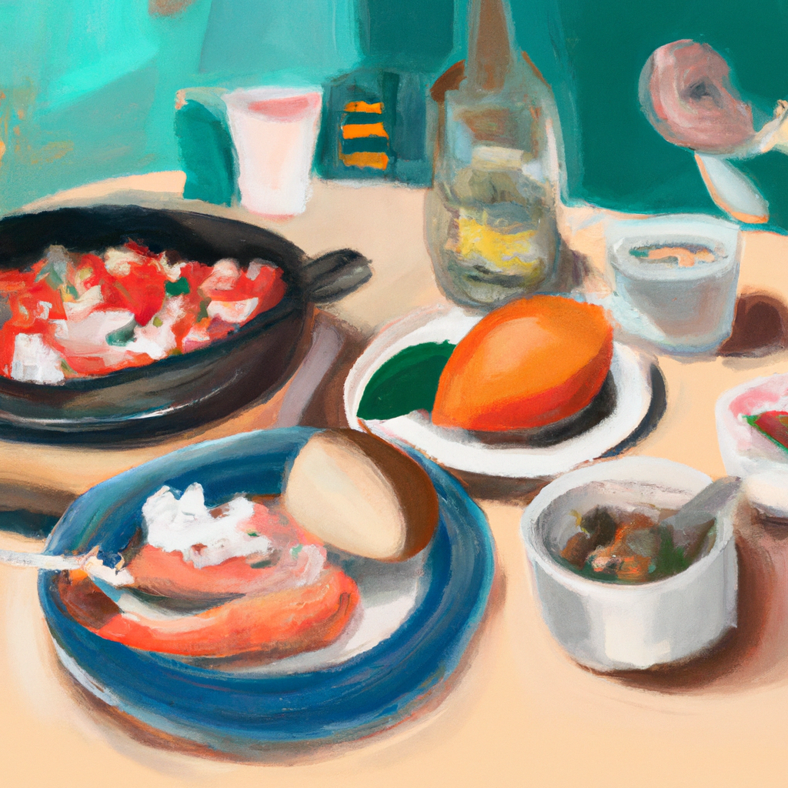

The best meal I ate so far
I'm sure everyone can agree that the best meal you ever ate is a hard thing to decide. For me, it's an easy one: pizza. I'm a huge fan of pizza and there's nothing quite like a hot slice of pizza to make my day.
I like to visit different restaurants to try out different styles and recipes. Whether it's wood-fired, New York-style, or a deep dish, each has its own unique flavor and texture. I'm always looking for ways to mix it up and experiment with new flavors.
I also enjoy trying out different toppings. From pepperoni, to anchovies, to pineapple, the possibilities are endless. I like to customize my pizza to make it unique and tasty.
Besides pizza, I also enjoy other classic comfort foods like macaroni and cheese, grilled cheese sandwiches, and donuts. All of these are great when done right, and I'm always looking for the perfect recipe to try out.
Food is a huge part of my life, and I'm always looking for new recipes to try out. From pizza to donuts, I'm always up for trying something new and delicious.